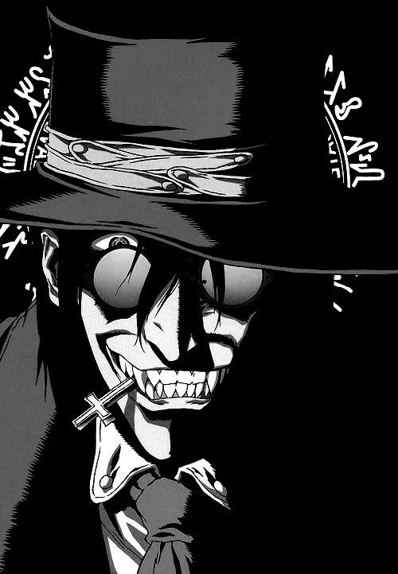
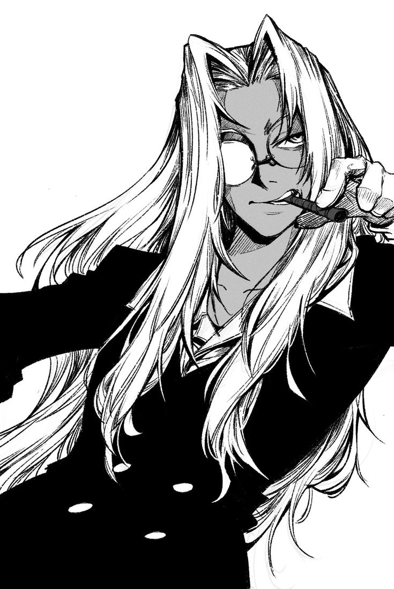
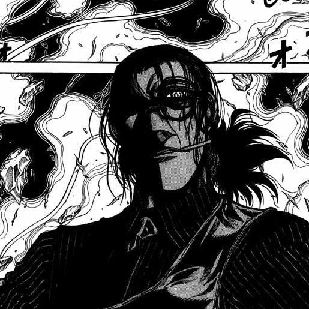
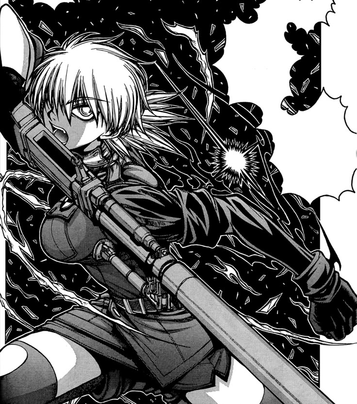
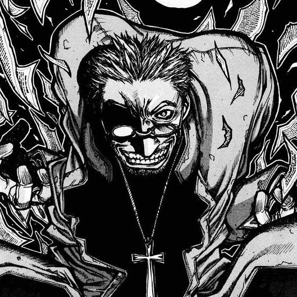
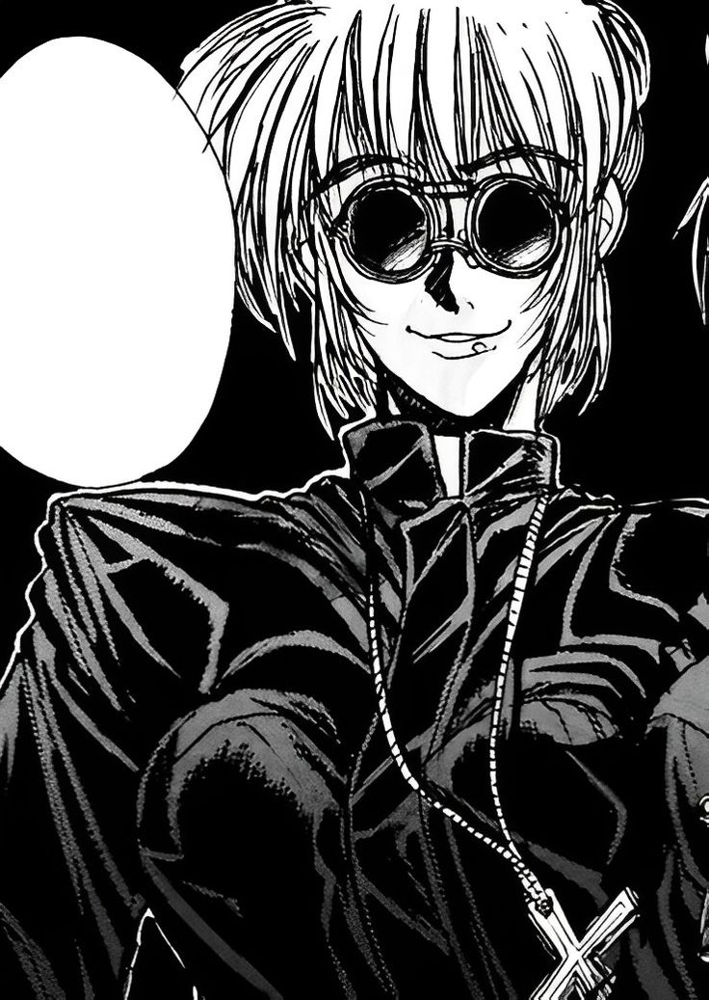

BreackPoint: > 1280px
(Resolution: Desktop)
BreackPoint: < 1280px > 800px
(Resolution: Table)
BreackPoint: < 800px
(Resolution: Mobile)

ALUCARD

INTEGRA FAIRBROOK

WALTER C DORNEZ

SERAS VICTORIA

Anderson, guerrero y experto cazador de vampiros perteneciente a la Agencia Iscariote del Vaticano, era un devoto católico con la intención de matar a quienes consideraba enemigos de Dios. Adecuadamente, su cuerpo fue modificado genéticamente para ser un "Regenerador", un sobrehumano capaz de luchar contra criaturas sobrenaturales. Considerándose el único y absoluto representante de Dios en la tierra, se opuso ferozmente a la Agencia Protestante Hellsing, particularmente al vampiro Alucard.

Heinkel, una asesina excepcional que a menudo se asoció con Yumie Takagi durante sus días de apogeo, posee un manejo particularmente hábil de las pistolas duales. Su comportamiento sereno y su forma táctica de pensar le valieron la confianza de Alexander Anderson para liderar la Vanguardia de Sacerdotes Armados cada vez que él se iba.